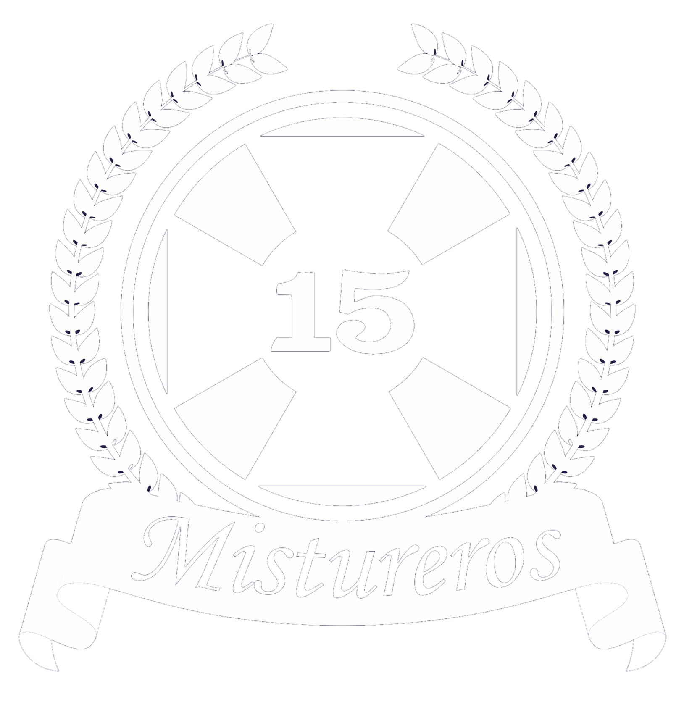

Agrega aquí la imagen complementaria de este punto.

HSMN - Décima Quinta Cuadrilla Los Mistureros del Señor
Punto 1 de 4
Contenido complementario
✦
Punto registrado
Este punto ya forma parte de tu Ruta del Misturero.
1 / 4
25%
Fe · Tradición · Servicio